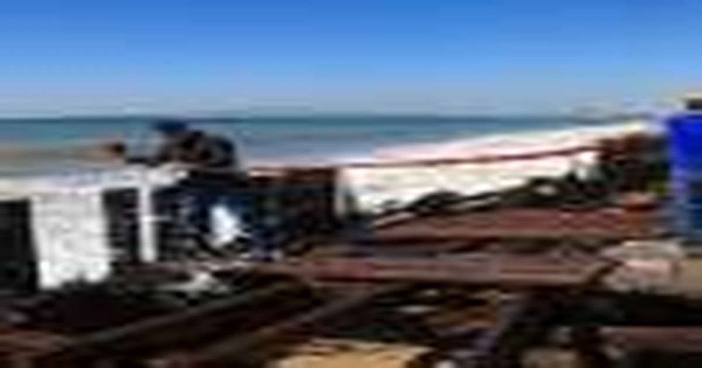

Мощные волны бьют по побережью Калифорнии, поскольку шторм угрожает еще большим ущербом
Мощные волны сотрясали сообщества вдоль южного побережья Калифорнии в пятницу, повреждая дома и посылая воду каскадом по улицам, поскольку жители готовились к большему потенциальному ущербу, нанесенному тропическим штормом Рейчел.